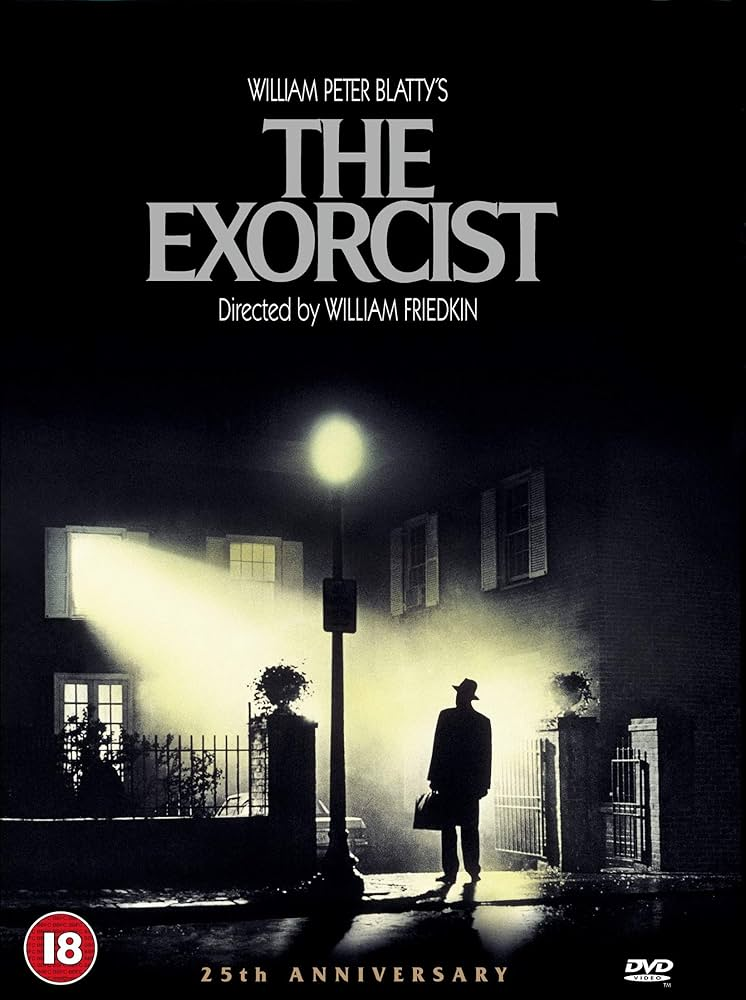
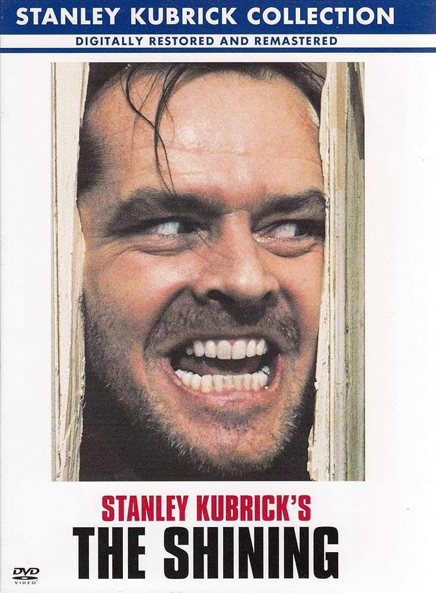
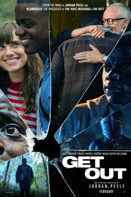
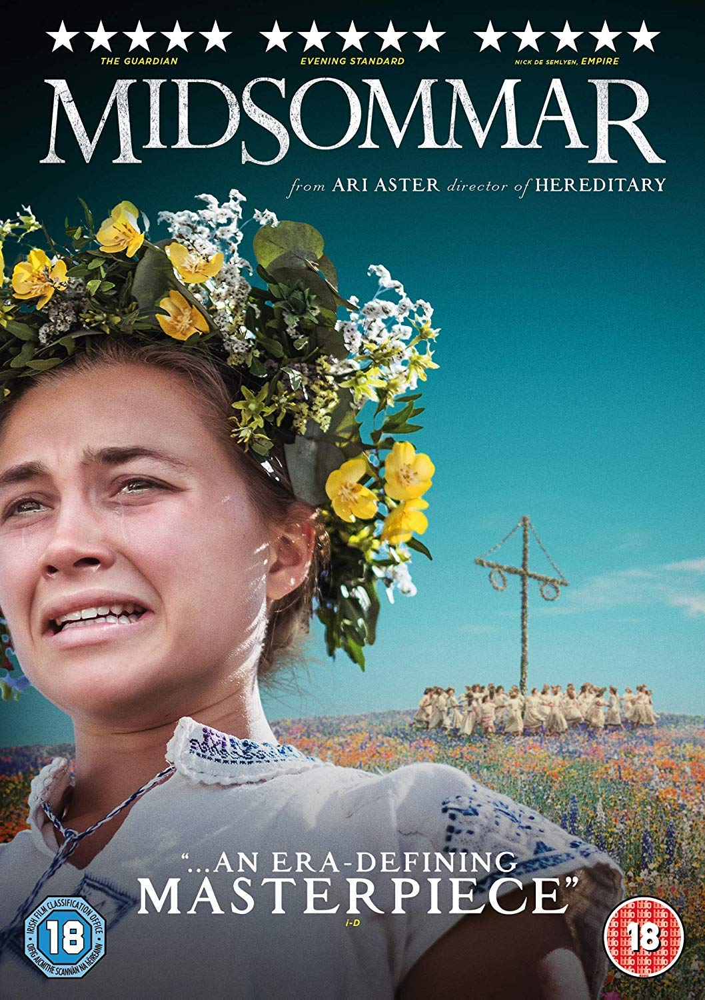

Portal de Terror Cinematográfico

Películas de Terror Imperdibles
Top Películas de Terror (por impacto cinematográfico)
-
Hereditary (2018) - Ari Aster
Hereditary - Terror psicológico que redefine el género -
The Exorcist (1973) - William Friedkin
 The Exorcist - Clásico del terror sobrenatural -
The Shining (1980) - Stanley Kubrick
 The Shining - Obra maestra de Kubrick -
Halloween (1978) - John Carpenter
_theatrical_poster.jpg)
Halloween - El slasher que definió el género -
Get Out (2017) - Jordan Peele
 Get Out - Terror social innovador -
Midsommar (2019) - Ari Aster
 Midsommar - Folk horror perturbador -
The Babadook (2014) - Jennifer Kent

The Babadook - Terror maternal psicológico
Subgéneros de Terror
- Terror Psicológico
- Slasher
- Found Footage
- Body Horror
- Folk Horror
- Supernatural
Directores de Terror Destacados
- Ari Aster
- Director de Hereditary y Midsommar, maestro del terror psicológico
- Jordan Peele
- Director de Get Out y Us, innovador en terror social
- Jennifer Kent
- Directora de The Babadook, especialista en terror maternal
- John Carpenter
- Leyenda del terror con Halloween y The Thing
Series de Terror Imperdibles
| Serie | Año | Temporadas | Calificación IMDB | Estado |
|---|---|---|---|---|
| The Haunting of Hill House | 2018 | 1 | 8.6 | Completada |
| American Horror Story | 2011- | 12 | 8.0 | En emisión |
| The Walking Dead | 2010-2022 | 11 | 8.2 | Finalizada |
| Stranger Things | 2016-2025 | 5 | 8.7 | Finalizando |
| Haunted: Latinoamérica | 2021 | 1 | 4.5 | Finalizada |
Contenido Multimedia
Audio: Banda Sonora de Hereditary
Video: Tráiler de Hereditary
Mapa: Ubicación de rodaje de Hereditary (una de ellas)
Acerca de
Pagina web creada por el afan a las peliculas de terror